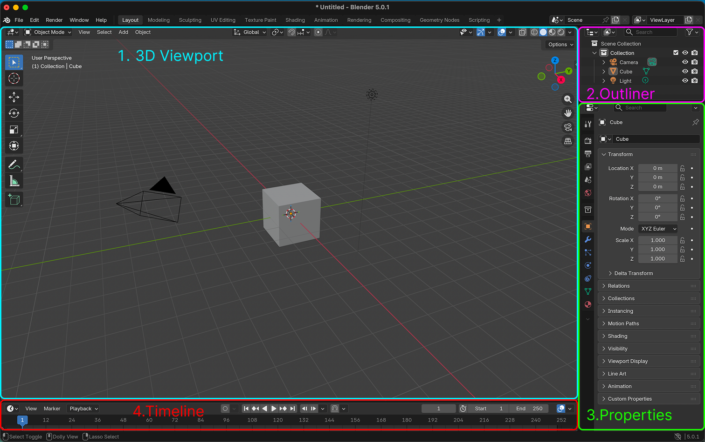

1
한 번에 하나씩
프리퍼런스, 화면 조작, 기본 변형, 첫 모델, 기능 드릴 순서로 단계가 열립니다.
시연만 보고 있으면 바로 따라오기 어렵고, 영상만 다시 봐도 금방 잊어버리기 쉽습니다. 그래서 이 페이지는 `중요한 것만 직접 따라하고`, 체크하고, 다음 단계로 넘어가는 방식으로 구성했습니다. 학생은 지금 무엇을 해야 하는지 한눈에 알 수 있고, 멈췄던 지점부터 다시 시작할 수 있습니다.
프리퍼런스, 화면 조작, 기본 변형, 첫 모델, 기능 드릴 순서로 단계가 열립니다.
학생은 각 단계에서 실제 행동을 한 뒤 체크하면서 진도를 올립니다.
자주 막히는 포인트와 완료 기준을 같이 보여줘서 혼자서도 복습이 가능합니다.
노션이 자료를 모아두는 데 강하다면, 이 페이지는 학생이 `지금 무엇을 해봐야 하는지` 안내하는 데 집중합니다. 수업 중에도, 수업 후 복습할 때도 같은 순서를 유지합니다.
학생은 긴 설명을 다 읽지 않아도, 지금 당장 해야 할 행동부터 따라갈 수 있습니다.
중요한 동작은 체크리스트로 끊어서, 한 단계를 마치면 다음 단계가 열리도록 설계했습니다.
어디까지 했는지 저장되기 때문에 복습할 때도 처음부터 다시 찾지 않아도 됩니다.
이번 주는 설명보다 손의 감각을 먼저 만드는 주차입니다.
학생이 Blender에서 가장 먼저 잃어버리는 것은 기능이 아니라 방향감입니다. 그래서 인터페이스 설명도 “어디가 어디인지”부터 짧게 잡아주는 편이 훨씬 효과적입니다.

오브젝트를 직접 보고 움직이는 메인 화면입니다. 화면을 돌리고 확대하는 감각이 가장 먼저 필요합니다.
씬 안의 오브젝트 목록입니다. 학생이 지금 무엇을 선택했는지 확인하는 습관이 중요합니다.
위치, 회전, 크기, 재질 같은 세부 설정이 모여 있는 곳입니다. 값 확인과 수정에 자주 씁니다.
학생이 검색하다가 길을 잃지 않도록, Week 02에서 실제로 필요한 Blender 공식 문서만 골라서 바로 볼 수 있게 붙였습니다. 수업 중 막히면 이 섹션부터 확인하도록 안내하면 좋습니다.
Preferences 창 구조와 저장 방식, 공장 초기화 개념을 볼 수 있는 공식 문서입니다.

뷰포트에서 방향을 잃지 않도록 Navigation Gizmo와 기본 이동 개념을 확인할 수 있습니다.

면을 밀어 형태를 만드는 원리를 도식으로 확인할 수 있어, 첫 모델 설명에 바로 연결하기 좋습니다.

구조선이 어떻게 들어가는지 미리 보면, 학생이 Loop Cut을 “선 긋기”가 아니라 구조 제어로 이해하게 됩니다.

아래 단계는 학생이 수업 중 실제로 수행하고 넘어가는 흐름입니다. 각 단계의 체크리스트를 모두 끝내면 다음 단계가 열리고, 진도는 브라우저에 저장됩니다.
수업에서 같은 화면과 같은 입력 방식이 나오도록 기본 입력 설정을 맞춥니다.
먼저 첫 실행 화면을 보고, 이어서 Preferences 위치를 수업에서 직접 찾아보게 하면 가장 효과적입니다.
아직 아무 작업도 하지 않은 상태에서 같은 출발점으로 수업을 맞출 때 쓰는 파일과 링크입니다.
Starter 다운로드 · week02_factory_start.blend학생이 가장 자주 놓치는 부분은 기능보다 뷰 조작입니다. 먼저 손에 익혀야 합니다.
학생이 가장 많이 놓치는 뷰 조작과 UI 위치를 짧게 다시 확인하는 용도입니다.
여러 기본 오브젝트가 있는 씬에서 화면 회전, 이동, 확대/축소를 더 쉽게 연습할 수 있습니다.
Starter 다운로드 · week02_navigation_practice.blendG, R, S, 축 제한만 익혀도 학생은 “내가 움직일 수 있다”는 감각을 얻습니다.
추가, 이동, 회전, 스케일이 각각 무엇을 바꾸는지 다시 보며 학생이 자기 손으로 따라하는 단계입니다.
서로 다른 기본 오브젝트가 준비되어 있어, G / R / S와 축 제한을 연습하기 좋습니다.
Starter 다운로드 · week02_transform_practice.blend복잡한 결과보다, Edit Mode와 기본 도구가 실제로 쓰인 경험을 만드는 단계입니다.
면 선택, Inset, Extrude를 연결해서 “첫 입체”를 만드는 흐름을 다시 보는 용도입니다.
단순 Cube 하나만 남겨둔 상태라서, Inset과 Extrude 실습을 수업과 같은 출발점에서 시작할 수 있습니다.
Starter 다운로드 · week02_pencil_holder_start.blendExtrude, Bevel, Loop Cut을 각각 의도적으로 써보면서 도구의 차이를 분명히 남깁니다.
기능 차이를 분리해서 다시 보기에 좋은 구간입니다. 학생이 바로 같은 오브젝트에 적용해보게 하면 효과가 큽니다.
비율이 정리된 블록에서 Bevel과 Loop Cut을 바로 실험할 수 있습니다.
Starter 다운로드 · week02_feature_drill_start.blend학생용 강의 페이지는 “무엇을 읽을지”보다 “무엇을 해볼지”가 먼저 보여야 합니다.
수업 중에는 교수자가 모든 학생을 동시에 볼 수 없기 때문에, 자주 막히는 포인트를 미리 페이지에 심어두는 것이 좋습니다.
실습 단계가 끝나면 바로 과제로 이어져야 학생이 “오늘 배운 걸 어디에 쓰는지” 이해할 수 있습니다.
이번 주 과제는 결과물을 멋지게 만드는 것보다, 화면 조작과 기본 모델링 도구를 실제로 사용했다는 흔적이 남는 것이 중요합니다.